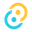

FLUXORExtensión del navegador
Últimas capturas
Diagnóstico
También puedes consultar los errores en la página de extensiones de tu navegador.

También puedes consultar los errores en la página de extensiones de tu navegador.